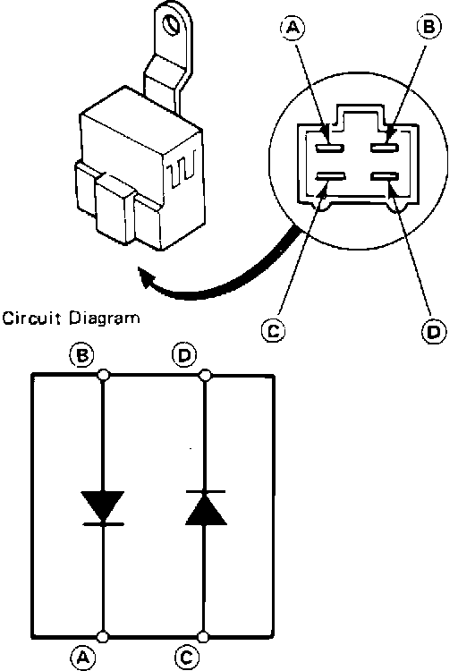

Compressor Clutch Diode HVAC: Testing and Inspection
Diode Testing:

NOTE: Diodes pass current in only one direction.
1. Connect positive ohmmeter probe to terminal B and negative to terminal A. There should be continuity.
2. Reverse probes. There should be no continuity.
3. Connect positive ohmmeter probe to terminal C and negative to terminal D. There should be continuity.
4. Reverse probes. There should be no continuity.
5. If not as specified, replace diode.